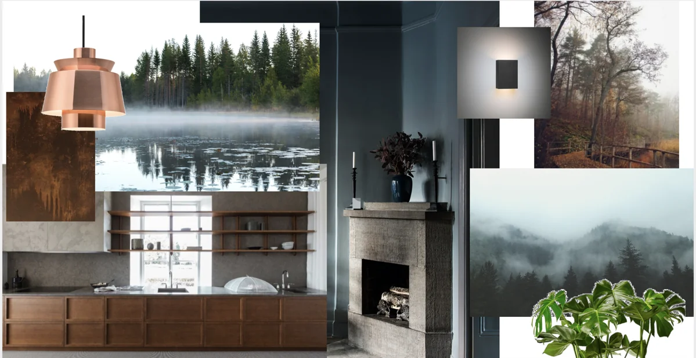

Kajsa Rosén · Kajsa Inreder
Nyfiken på rum.
Och på dig.
Jag heter Kajsa. Jag söker gärna den gemensamma nämnaren mellan färger, strukturer, former, träslag och ljus.
Men mitt arbete börjar alltid med människorna. Hur ni vill leva, arbeta och känna er i era rum. Jag vill att inredningen ska fungera för er, och vara behaglig att vistas i.
Jag är certifierad inredare och homestylist och har en affärsinriktad projektledarutbildning från IHM. Min bakgrund finns i service, ledarskap och pedagogik, med en högskoleutbildning från Idrottshögskolan i Stockholm.
Att låta behoven styra framför begären ligger mig varmt om hjärtat. Omtanke om miljön och intresset för hälsa och rörelse följer med även in i mitt sätt att se på rum.
Säg hej
Ur Kajsas arbetsprocess · MoodboardDet är helheten
du känner.
Rätt färg. Ett ljus som gör rummet mjukare. Material som trivs tillsammans. De små besluten gör stor skillnad.
En ton att bygga vidare på.
Färgsättningen binder ihop rummets delar. Jag hjälper dig hitta toner som samspelar med ljuset, möblerna och känslan du vill åt.
Projekt som
har uppmärksammats.
På min webbplats finns fler länkar om arbetet för Didriksons.
Didriksons öppnar Brand Studio · MynewsdeskEn kreativ mötesplats · ResuméFler referenser på Kajsas ursprungliga hemsida